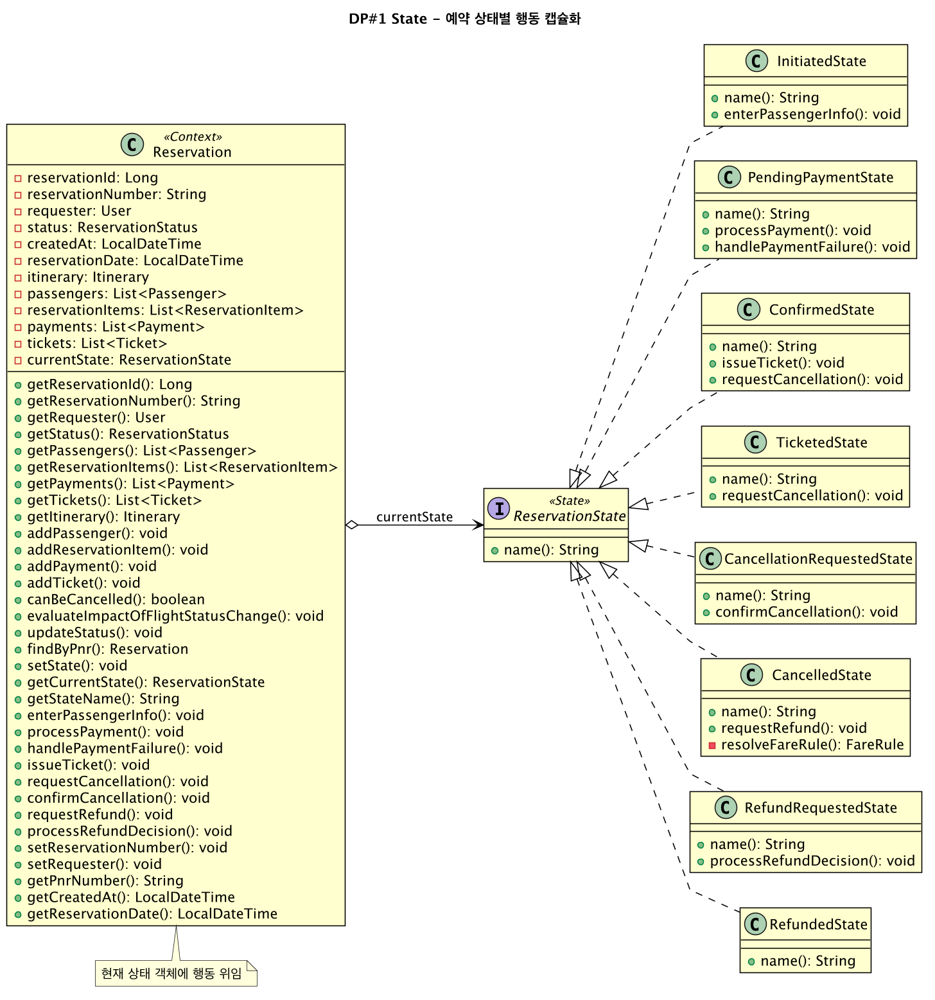
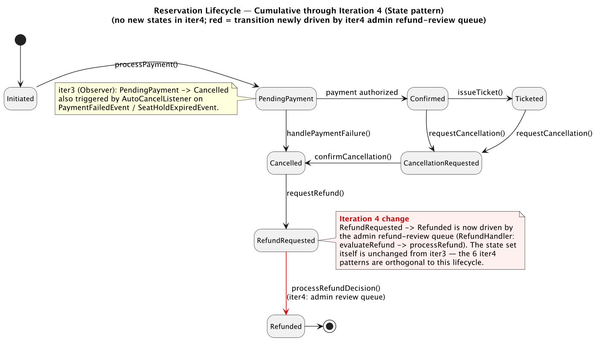

스테이트 패턴,
상태가 행동을 바꾼다
자판기는 동전이 있을 때와 없을 때 같은 버튼에 다르게 반응한다. 주문은 예약, 확정, 취소 상태마다 행동이 다르다. 스테이트는 "지금 어떤 상태냐"에 따라 행동을 바꾸되, 그 상태마다의 코드를 각각의 클래스에 모아 둔다.
스테이트 패턴(State Pattern)의 의도는 한 문장이다. 객체의 내부 상태가 바뀔 때 그 객체의 행동도 바뀌게 한다 — 마치 객체의 클래스가 바뀐 것처럼 보이도록. 같은 메서드를 불러도 객체가 어떤 상태에 있느냐에 따라 전혀 다른 일이 일어난다. 그리고 그 "상태별 행동"을 한 덩어리 코드에 몰아넣는 대신, 상태 하나하나를 독립된 클래스로 만들어 행동을 그 클래스 안에 가둔다.
왜 필요한가? 상태에 따라 행동이 갈리는 객체를 가장 단순하게 짜는 방법은 상태를 정수 플래그(int state)로 두고, 모든 메서드 안에 switch(state)를 박는 것이다. 자판기로 치면 insertCoin(), pressButton(), dispense() 메서드마다 "동전없음 / 동전있음 / 판매중 / 품절" 네 가지 분기가 들어간다. 상태가 하나 늘면 모든 메서드의 모든 switch를 빠짐없이 고쳐야 한다. 한 군데라도 빠뜨리면 그 상태에서 그 동작만 조용히 잘못된다 — 추적하기 가장 까다로운 버그다. 스테이트 패턴은 이 흩어진 분기를 "상태별 클래스"로 응집시켜, 새 상태는 새 클래스 하나로 끝나게 한다.
구조 — 상태를 클래스로, 전이는 상태 안에서
구조는 Context, State 인터페이스, 그리고 구체 상태 클래스들로 이뤄진다. Context는 현재 상태를 State 타입 필드로 들고 있고, 외부 요청(request())이 오면 그 일을 현재 상태 객체에 위임한다. 각 구체 상태(ConcreteStateA, ConcreteStateB)는 자기 상태에서의 행동을 구현하고, 처리가 끝나면 context.setState(다음상태)로 Context의 상태를 바꿔 놓는다. 이 전이 로직이 상태 클래스 안에 들어 있다는 점이 스테이트의 정체성이다.
코드 — 상태가 다음 상태를 안다
자판기를 보자. 각 상태 클래스가 자기 행동을 처리하고, 끝나면 context의 상태를 다음으로 옮긴다. VendingMachine(Context)에는 switch가 한 줄도 없다 — 그저 현재 상태에 위임할 뿐이다.
참여자와 결과
참여자
State(상태 인터페이스), ConcreteState(상태별 행동 + 전이), Context(현재 상태 보유 + 위임)
장점
상태별 행동을 한 클래스에 응집, 거대한 switch 제거, 새 상태 추가가 클래스 추가로 끝남(OCP)
단점
상태 수만큼 클래스 증가, 전이 로직이 여러 상태 클래스에 분산되어 전체 전이 그림 파악이 어려울 수 있음
핵심 비교 — Strategy vs State
이 단원에서 가장 자주 출제되는 비교다. 두 패턴의 클래스 다이어그램은 사실상 동일하다. 둘 다 Context가 인터페이스 타입의 필드를 들고, 자기 일을 그 객체에 위임한다. 그래서 구조(UML)만 보고 둘을 구분하려 들면 실패한다. 차이는 그림이 아니라 의도와 의미에 있다.
첫째, 누가 갈아끼우는가. 스트래티지에서 전략을 고르는 주체는 외부의 클라이언트다. 클라이언트가 "이번엔 20% 할인 전략" 하고 골라 주입한다. 스테이트에서 상태를 바꾸는 주체는 상태 객체들 자신이다. 자판기 코드 어디에도 "이제 HasCoin으로 바꿔라"는 외부 명령이 없다 — NoCoin이 일을 처리하다 스스로 HasCoin으로 넘긴다. 한 줄 요약: "갈아끼우면 Strategy, 스스로 넘어가면 State."
둘째, 객체들이 서로를 아는가. 스트래티지의 전략들은 서로의 존재를 모른다. RateDiscount는 NoDiscount가 있는지조차 모른다 — 완전히 독립적이고 평등한 대안들이다. 반면 스테이트의 상태들은 전이 관계로 서로 엮여 있다. NoCoin은 자기 다음이 HasCoin임을 코드로 알고 있다. 상태들은 하나의 상태 기계(state machine)를 이루는 노드들이고, 서로를 가리킨다.
셋째, 바뀌는 빈도와 의미. 스트래티지는 보통 한 번 정해지면 그 작업 동안 잘 안 바뀐다(어떤 정렬을 쓸지 정하면 그 정렬로 끝까지). 스테이트는 객체가 살아 있는 동안 상태가 여러 번, 자연스럽게 흐른다(동전없음 → 동전있음 → 동전없음 …). 또 스트래티지의 전략 교체는 결과의 "방식"만 바꾸지만, 스테이트의 상태 전이는 객체의 "정체성"이 바뀐 것처럼 느껴진다.
| 비교 기준 | 스트래티지 (Strategy) | 스테이트 (State) |
|---|---|---|
| 클래스 구조 | Context가 인터페이스에 위임 | 동일 — Context가 인터페이스에 위임 |
| 의도 | 교체 가능한 알고리즘을 캡슐화 | 상태에 따라 행동이 달라지게 |
| 전환 주체 | 외부 클라이언트가 선택해 주입 | 상태 객체 스스로 다음 상태로 전이 |
| 객체 간 관계 | 전략들은 서로 모름(독립적 대안) | 상태들은 전이로 서로를 앎(상태 기계) |
| 전환 빈도 | 대개 작업당 한 번 설정 | 객체 수명 동안 여러 번 흐름 |
| 한 줄 핵심 | "갈아끼우면 Strategy" | "스스로 넘어가면 State" |
context.setState(...)), 스트래티지는 외부 클라이언트가 교체. ③ 스테이트는 상태들이 전이로 서로를 알고(상태 기계), 스트래티지의 전략들은 서로 모른다. ④ "마치 클래스가 바뀐 것처럼 보인다"는 스테이트의 의도 문장을 그대로 기억해 두라.
다음으로 — 커맨드 패턴
스트래티지와 스테이트가 "행위(알고리즘/상태)"를 객체로 뽑아냈다면, 다음 sub-chapter의 커맨드 패턴(Command Pattern)은 한 걸음 더 나아가 "요청 자체"를 객체로 만든다. "조명을 켜라"는 요청을 객체로 포장하면, 그 요청을 변수에 담고, 큐에 쌓고, 실행을 취소(undo)할 수 있게 된다. 행위의 캡슐화가 알고리즘에서 요청으로 확장되는 셈이다.
🛫 대한항공 예약시스템 — 실전 적용
Initiated→PendingPayment→Confirmed→Ticketed→…→Refunded 전이를 Reservation의 if/switch 없이, 각 상태 객체가 자신이 허용하는 행동만 구현한다.

